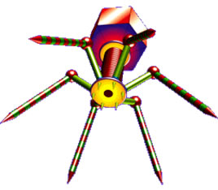
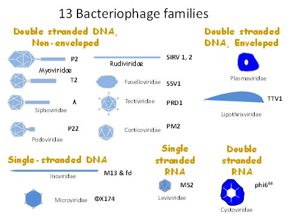
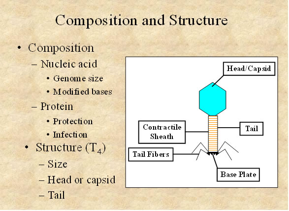
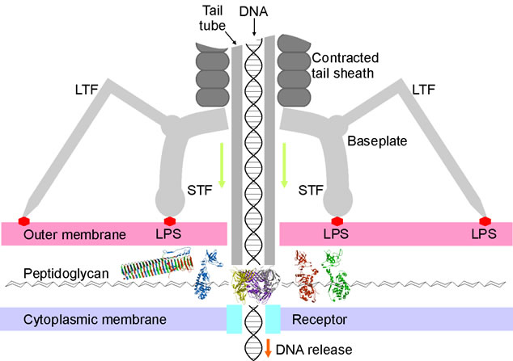
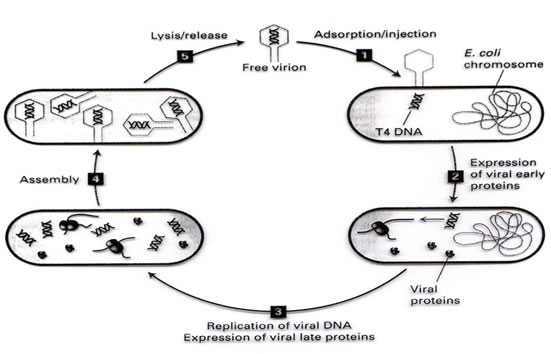
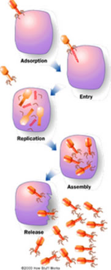
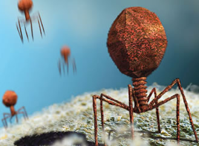
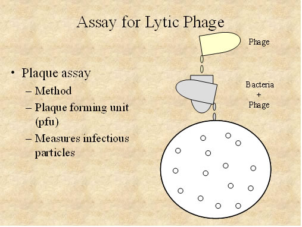
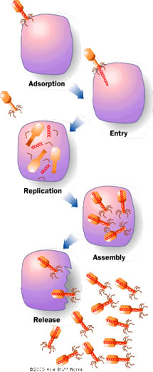
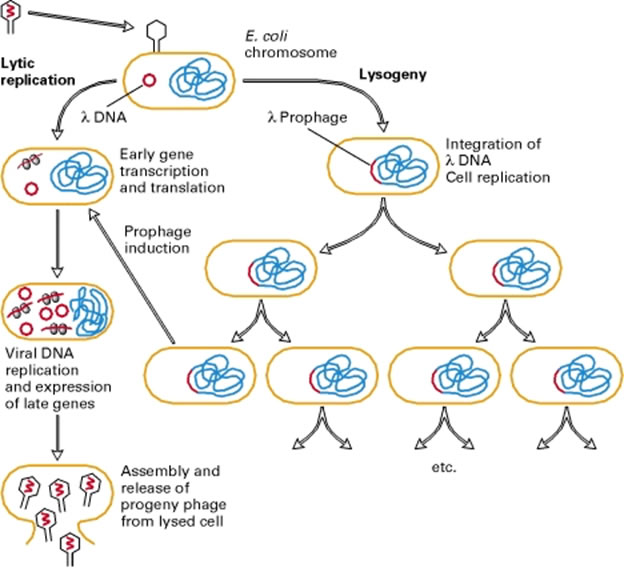

AMBE 101 :: Lecture 07 :: BACTERIOPHAGES: STRUCTURE AND PROPERTIES OF BACTERIAL VIRUSES

Bacteriophage (phage) are obligate intracellular parasites that multiply inside bacteria by making use of some or all of the host biosynthetic machinery (pathmicro.med.sc.edu/ppt). The term is commonly used in its shortened form, phage. Interestingly, Bacteriophages are much smaller than the bacteria they destroy.Phages are estimated to be the most widely distributed and diverse entities in the biosphere. Phages are ubiquitous and can be found in all reservoirs populated by bacterial hosts, such as soil or the intestines of animals. One of the densest natural sources for phages and other viruses is sea water. They have been used for over 60 years as an alternative to antibiotics, however, this much controversial area of research (http://www.phages.org).
Typical phages have hollow heads (where the phage DNA or RNA is stored) and tunnel tails, the tips of which have the ability to bind to specific molecules on the surface of their target bacteria. The viral DNA is then injected through the tail into the host cell, where it directs the production of progeny phages often over a hundred in half an hour. These "young" phages burst from the host cell (killing it) and infect more bacteria.

Composition of bacteriophages
Although different bacteriophages may contain different materials they all contain nucleic acid and protein. Depending upon the phage, the nucleic acid can be either DNA or RNA but not both and it can exist in various forms. Bacteriophages have been classified as:

The nucleic acids of phages often contain unusual or modified bases. These modified bases protect phage nucleic acid from nucleases that break down host nucleic acids during phage infection. The size of the nucleic acid varies depending upon the phage. The simplest phages only have enough nucleic acid to code for 3-5 average size gene products while the more complex phages may code for over 100 gene products.
The number of different kinds of protein and the amount of each kind of protein in the phage particle will vary depending upon the phage. The simplest phages have many copies of only one or two different proteins while more complex phages may have many different kinds. The proteins function in infection and to protect the nucleic acid from nucleases in the environment. Phages are also commonly employed in gene cloning, especially those exhibiting lytic and lysogenic cycles (http://www.web-books.com)
Structure of bacteriophages
Bacteriophage comes in many different sizes and shapes. The basic structural features of bacteriophages are (which depicts the phage called T4)
1. Size - T4 is among the largest phages; it is approximately 200 nm long and 80-100 nm wide. Other phages are smaller. Most phages range in size from 24-200 nm in length.
2. Head or Capsid - All phages contain a head structure which can vary in size and shape. Some are icosahedral (20 sides) others are filamentous. The head or capsid is composed of many copies of one or more different proteins. Inside the head is found the nucleic acid. The head acts as the protective covering for the nucleic acid.
3. Tail - Many but not all phages have tails attached to the phage head. The tail is a hollow tube through which the nucleic acid passes during infection. The size of the tail can vary and some phages do not even have a tail structure. In the more complex phages like T4 the tail is surrounded by a contractile sheath which contracts during infection of the bacterium. At the end of the tail the more complex phages like T4 have a base plate and one or more tail fibers attached to it. The base plate and tail fibers are involved in the binding of the phage to the bacterial cell. Not all phages have base plates and tail fibers. In these instances other structures are involved in binding of the phage particle to the bacterium.

Infection of Host Cells (http:// biology.about.com/od/virology)

A. Adsorption
The first step in the infection process is the adsorption of the phage to the bacterial cell. This step is mediated by the tail fibers or by some analogous structure on those phages that lack tail fibers and it is reversible. The tail fibers attach to specific receptors on the bacterial cell and the host specificity of the phage (i.e. the bacteria that it is able to infect) is usually determined by the type of tail fibers that a phage has. The nature of the bacterial receptor varies for different bacteria. Examples include proteins on the outer surface of the bacterium, LPS, pili, and lipoprotein. These receptors are on the bacteria for other purposes and phages have evolved to use these receptors for infection.
B. Irreversible attachment
The attachment of the phage to the bacterium via the tail fibers is a weak one and is reversible. Irreversible binding of phage to a bacterium is mediated by one or more of the components of the base plate. Phages lacking base plates have other ways of becoming tightly bound to the bacterial cell.VIE
C. Sheath Contraction
The irreversible binding of the phage to the bacterium results in the contraction of the sheath (for those phages which have a sheath) and the hollow tail fiber is pushed through the bacterial envelope. Phages that don't have contractile sheaths use other mechanisms to get the phage particle through the bacterial envelope. Some phages have enzymes that digest various components of the bacterial envelope.
D. Nucleic Acid Injection
When the phage has gotten through the bacterial envelope the nucleic acid from the head passes through the hollow tail and enters the bacterial cell. Usually, the only phage component that actually enters the cell is the nucleic acid. The remainder of the phage remains on the outside of the bacterium. There are some exceptions to this rule. This is different from animal cell viruses in which most of the virus particle usually gets into the cell. This difference is probably due to the inability of bacteria to engulf materials.

LYTIC AND LYSOGENIC CYCLES - PHAGE MULTIPLICATION CYCLE
A. Definition - Lytic or virulent phages are phages which can only multiply on bacteria and kill the cell by lysis at the end of the life cycle.

Lytic or Virulent Phages
a. Eclipse period - During the eclipse phase, no infectious phage particles can be found either inside or outside the bacterial cell. The phage nucleic acid takes over the host biosynthetic machinery and phage specified m-RNA's and proteins are made. There is an orderly expression of phage directed macromolecular synthesis, just as one sees in animal virus infections. Early m-RNA's code for early proteins which are needed for phage DNA synthesis and for shutting off host DNA, RNA and protein biosynthesis. In some cases the early proteins actually degrade the host chromosome. After phage DNA is made late m-RNA's and late proteins are made. The late proteins are the structural proteins that comprise the phage as well as the proteins needed for lysis of the bacterial cell.
b. Intracellular Accumulation Phase - In this phase the nucleic acid and structural proteins that have been made are assembled and infectious phage particles accumulate within the cell.
c. Lysis and Release Phase - After a while the bacteria begin to lyse due to the accumulation of the phage lysis protein and intracellular phage are released into the medium. The number of particles released per infected bacteria may be as high as 1000.
Assay for Lytic Phage
a. Plaque assay - Lytic phage are enumerated by a plaque assay. A plaque is a clear area which results from the lysis of bacteria. Each plaque arises from a single infectious phage. The infectious particle that gives rise to a plaque is called a pfu (plaque forming unit).

B. Lysogenic or Temperate Phage
1. Definition - Lysogenic or temperate phages are those that can either multiply via the lytic cycle or enter a quiescent state in the cell. In this quiescent state most of the phage genes are not transcribed; the phage genome exists in a repressed state. The phage DNA in this repressed state is called a prophage because it is not a phage but it has the potential to produce phage. In most cases the phage DNA actually integrates into the host chromosome and is replicated along with the host chromosome and passed on to the daughter cells. The cell harboring a prophage is not adversely affected by the presence of the prophage and the lysogenic state may persist indefinitely. The cell harboring a prophage is termed a lysogen.
2. Events Leading to Lysogeny - The Prototype Phage: Lambda
a. Circularization of the phage chromosome - Lambda DNA is a double stranded linear molecule with small single stranded regions at the 5' ends. These single stranded ends are complementary (cohesive ends) so that they can base pair and produce a circular molecule. In the cell the free ends of the circle can be ligated to form a covalently closed circle as illustrated in Figure 5.
b. Site-specific recombination - A recombination event, catalyzed by a phage coded enzyme, occurs between a particular site on the circularized phage DNA and a particular site on the host chromosome. The result is the integration of the phage DNA into the host chromosome as illustrated in Figure 6.
c. Repression of the phage genome - A phage coded protein, called a repressor, is made which binds to a particular site on the phage DNA, called the operator, and shuts off transcription of most phage genes EXCEPT the repressor gene. The result is a stable repressed phage genome which is integrated into the host chromosome. Each temperate phage will only repress its own DNA and not that from other phage, so that repression is very specific (immunity to superinfection with the same phage).
3. Events Leading to Termination of Lysogeny
Anytime a lysogenic bacterium is exposed to adverse conditions, the lysogenic state can be terminated. This process is called induction. Conditions which favor the termination of the lysogenic state include: desiccation, exposure to UV or ionizing radiation, exposure to mutagenic chemicals, etc. Adverse conditions lead to the production of proteases (rec A protein) which destroy the repressor protein. This in turn leads to the expression of the phage genes, reversal of the integration process and lytic multiplication.

4. Lytic vs Lysogenic Cycle
The decision for lambda to enter the lytic or lysogenic cycle when it first enters a cell is determined by the concentration of the repressor and another phage protein called cro in the cell. The cro protein turns off the synthesis of the repressor and thus prevents the establishment of lysogeny. Environmental conditions that favor the production of cro will lead to the lytic cycle while those that favor the production of the repressor will favor lysogeny.

5. Significance of Lysogeny
a. Model for animal virus transformation - Lysogeny is a model system for virus transformation of animal cells
b. Lysogenic conversion - When a cell becomes lysogenized, occasionally extra genes carried by the phage get expressed in the cell. These genes can change the properties of the bacterial cell. This process is called lysogenic or phage conversion. This can be of significance clinically. e.g. Lysogenic phages have been shown to carry genes that can modify the Salmonella O antigen, which is one of the major antigens to which the immune response is directed. Toxin production by Corynebacterium diphtheriae is mediated by a gene carried by a phage. Only those strain that have been converted by lysogeny are pathogenic.
| Download this lecture as PDF here |